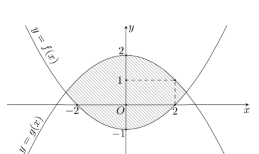

ĐỀ THI TOÁN - ĐỀ SỐ 05 HOT
Phần I: Trắc Nghiệm Nhiều Lựa Chọn
Tóm tắt kiến thức: Tính đơn điệu của hàm số
Hàm số \( f(x) \) đồng biến trên khoảng \( (a; b) \) nếu \( f'(x) \geq 0 \), nghịch biến nếu \( f'(x) \leq 0 \). Bảng biến thiên cho biết dấu của \( f'(x) \), từ đó xác định các khoảng đồng biến/nghịch biến.
Câu 1:
Cho hàm số \( y = f(x) \) xác định trên \( \mathbb{R} \) và có bảng biến thiên như sau:

Hàm số \( y = f(x) \) đồng biến trên khoảng nào?
Chọn đáp án:
Lời giải:
Từ bảng biến thiên, ta thấy \( f'(x) \geq 0 \) trên khoảng \( (2; +\infty) \), do đó hàm số đồng biến trên khoảng này.
Đáp án: C.
Tóm tắt kiến thức: Độ lệch chuẩn
Độ lệch chuẩn của mẫu số liệu ghép nhóm:
- Trung bình: \( \bar{x} = \frac{\sum x_i n_i}{\sum n_i} \).
- Phương sai: \( S^2 = \frac{1}{n} \sum n_i x_i^2 - \bar{x}^2 \).
- Độ lệch chuẩn: \( S = \sqrt{S^2} \).
Câu 2:
Thời gian chạy tập luyện cự li 100 m của hai vận động viên được cho trong bảng sau:

| Thời gian (giây) | \([10; 10,3)\) | \([10,3; 10,6)\) | \([10,6; 10,9)\) | \([10,9; 11,2)\) |
|---|---|---|---|---|
| Giá trị đại diện | 10,15 | 10,45 | 10,75 | 11,05 |
| Số lần chạy của A | 2 | 10 | 5 | 3 |
| Số lần chạy của B | 3 | 7 | 9 | 6 |
Chọn đáp án:
Lời giải:
Vận động viên A:
Trung bình: \( \bar{x}_A = \frac{10,15 \cdot 2 + 10,45 \cdot 10 + 10,75 \cdot 5 + 11,05 \cdot 3}{20} = \frac{2117}{200} \approx 10,585 \).
Phương sai: \( s_A^2 = \frac{1}{20} \left( 10,15^2 \cdot 2 + 10,45^2 \cdot 10 + 10,75^2 \cdot 5 + 11,05^2 \cdot 3 \right) - \left( \frac{2117}{200} \right)^2 \approx \frac{2691}{40000} \).
Độ lệch chuẩn: \( s_A = \sqrt{\frac{2691}{40000}} \approx 0,26 \).
Vận động viên B:
Trung bình: \( \bar{x}_B = \frac{10,15 \cdot 3 + 10,45 \cdot 7 + 10,75 \cdot 9 + 11,05 \cdot 6}{25} = \frac{5333}{500} \approx 10,666 \).
Phương sai: \( s_B^2 = \frac{1}{25} \left( 10,15^2 \cdot 3 + 10,45^2 \cdot 7 + 10,75^2 \cdot 9 + 11,05^2 \cdot 6 \right) - \left( \frac{5333}{500} \right)^2 \approx \frac{1296}{15625} \).
Độ lệch chuẩn: \( s_B = \sqrt{\frac{1296}{15625}} \approx 0,288 \).
So sánh: \( s_A \approx 0,26 < s_B \approx 0,288 \).
Đáp án: C.
Tóm tắt kiến thức: Tích phân xác định
Tích phân xác định \( \int_a^b f(x) \, dx \) biểu thị diện tích có dấu của vùng giới hạn bởi đồ thị \( y = f(x) \), trục hoành, và các đường \( x = a \), \( x = b \). Nếu \( f(x) \geq 0 \), tích phân bằng diện tích; nếu \( f(x) \leq 0 \), tích phân bằng âm diện tích.
Câu 3:
Cho đồ thị của hàm số \( y = f(x) \) như hình vẽ và diện tích hai phần tô đậm lần lượt là \( S_1 = 10 \) và \( S_2 = 3 \).

Giá trị của \( \int_{-1}^2 f(x) \, dx \) bằng
Chọn đáp án:
Lời giải:
Ta có \( S_1 = 10 \Rightarrow \int_{-1}^1 |f(x)| \, dx = 10 \Rightarrow \int_{-1}^1 f(x) \, dx = 10 \) (vì \( f(x) \geq 0, \forall x \in [-1; 1] \)).
Với \( S_2 = 3 \Rightarrow \int_1^2 |f(x)| \, dx = 3 \Rightarrow \int_1^2 f(x) \, dx = -3 \) (vì \( f(x) \leq 0, \forall x \in [1; 2] \)).
Vậy: \( \int_{-1}^2 f(x) \, dx = \int_{-1}^1 f(x) \, dx + \int_1^2 f(x) \, dx = 10 + (-3) = 7 \).
Đáp án: A.
Tóm tắt kiến thức: Thể tích khối tròn xoay
Thể tích khối tròn xoay tạo thành khi quay vùng \( D \) giới hạn bởi \( y = f(x) \), \( y = 0 \), \( x = a \), \( x = b \) quanh trục \( Ox \): \( V = \pi \int_a^b [f(x)]^2 \, dx \).
Câu 4:
Gọi \( D \) là hình phẳng giới hạn bởi các đường \( y = e^{2x} \), \( y = 0 \), \( x = 0 \), \( x = 1 \). Thể tích của khối tròn xoay tạo thành khi quay \( D \) quanh trục \( Ox \) bằng
Chọn đáp án:
Lời giải:
Thể tích: \( V = \pi \int_0^1 (e^{2x})^2 \, dx = \pi \int_0^1 e^{4x} \, dx \).
Đáp án: A.
Tóm tắt kiến thức: Vector trong không gian
Trong hình hộp, vector nối các đỉnh được biểu diễn qua các vector cạnh. Kiểm tra đẳng thức vector bằng cách phân tích thành các vector cơ bản.
Câu 5:
Cho hình hộp \( ABCD.EFGH \). Khẳng định nào dưới đây là khẳng định đúng?
Chọn đáp án:
Lời giải:
Trong hình hộp \( ABCD.EFGH \), ta có: \( \overrightarrow{AG} = \overrightarrow{AB} + \overrightarrow{BC} + \overrightarrow{CG} \).
Xét đáp án C: \( \overrightarrow{EG} + \overrightarrow{DH} = (\overrightarrow{EA} + \overrightarrow{AG}) + (\overrightarrow{DA} + \overrightarrow{AH}) = \overrightarrow{AB} + \overrightarrow{BC} + \overrightarrow{CG} = \overrightarrow{AG} \), đúng.
Các đáp án khác không thỏa mãn khi phân tích vector.
Đáp án: C.
Tóm tắt kiến thức: Thể tích khối chóp
Thể tích khối chóp: \( V = \frac{1}{3} \cdot S_{\text{đáy}} \cdot h \), trong đó \( S_{\text{đáy}} \) là diện tích đáy, \( h \) là chiều cao.
Câu 6:
Cho hình chóp \( S.ABCD \) có đáy \( ABCD \) là hình vuông cạnh \( a \) và \( SA \perp (ABCD) \), \( \angle SBA = 60^\circ \). Thể tích khối chóp \( S.ABCD \) bằng?
Chọn đáp án:
Lời giải:
Ta có: \( \tan 60^\circ = \frac{SA}{AB} \Rightarrow SA = a \sqrt{3} \).
Diện tích đáy: \( S_{ABCD} = a^2 \).
Thể tích: \( V = \frac{1}{3} \cdot S_{ABCD} \cdot SA = \frac{1}{3} \cdot a^2 \cdot a \sqrt{3} = \frac{\sqrt{3}}{3} a^3 \).
Đáp án: B.
Tóm tắt kiến thức: Cấp số nhân
Cấp số nhân \( (u_n) \) có công bội \( q \): \( u_{n+1} = u_n \cdot q \), do đó \( q = \frac{u_{n+1}}{u_n} \).
Câu 7:
Cho cấp số nhân \( (u_n) \) có \( u_2 = 2 \), \( u_3 = 6 \). Công bội \( q \) của cấp số nhân là:
Chọn đáp án:
Lời giải:
Công bội: \( q = \frac{u_3}{u_2} = \frac{6}{2} = 3 \).
Đáp án: A.
Tóm tắt kiến thức: Phương trình mũ
Phương trình \( a^{f(x)} = a^g \Rightarrow f(x) = g \) (với \( a > 0 \), \( a \neq 1 \)).
Câu 8:
Nghiệm phương trình \( 2^{x+1} = 16 \) là
Chọn đáp án:
Lời giải:
Ta có: \( 2^{x+1} = 16 = 2^4 \Rightarrow x + 1 = 4 \Rightarrow x = 3 \).
Đáp án: C.
Tóm tắt kiến thức: Bất phương trình logarit
Với \( 0 < a < 1 \), bất phương trình \( \log_a f(x) \geq \log_a g(x) \Leftrightarrow f(x) \leq g(x) \) (với \( f(x) > 0 \), \( g(x) > 0 \)).
Câu 9:
Tập nghiệm của bất phương trình \( \log_{0,3}(4x - 3) \geq \log_{0,3}(3x + 1) \) là:
Chọn đáp án:
Lời giải:
Điều kiện: \( 4x - 3 > 0 \Rightarrow x > \frac{3}{4} \) và \( 3x + 1 > 0 \Rightarrow x > -\frac{1}{3} \), suy ra \( x > \frac{3}{4} \).
Vì \( 0 < 0,3 < 1 \), ta có: \( \log_{0,3}(4x - 3) \geq \log_{0,3}(3x + 1) \Rightarrow 4x - 3 \leq 3x + 1 \Rightarrow x \leq 4 \).
Kết hợp: \( \frac{3}{4} < x \leq 4 \).
Đáp án: A.
Tóm tắt kiến thức: Góc trong không gian
Góc giữa đường thẳng và mặt phẳng: Nếu đường thẳng \( d \) tạo góc \( \theta \) với mặt phẳng \( (P) \), thì \( \theta \) là góc giữa \( d \) và hình chiếu của nó lên \( (P) \).
Câu 10:
Cho hình chóp \( S.ABCD \) có đáy \( ABCD \) là hình vuông cạnh \( a \), \( SA \) vuông góc với mặt phẳng \( (ABCD) \) và \( SD = a \sqrt{3} \). Góc giữa \( SC \) và mặt phẳng \( (ABCD) \) là
Chọn đáp án:
Lời giải:
Vì \( SA \perp (ABCD) \), góc giữa \( SC \) và \( (ABCD) \) là góc \( SCA \).
Độ dài: \( AC = a \sqrt{2} \), \( SD = a \sqrt{3} \Rightarrow SA = a \sqrt{2} \).
Tam giác \( SAC \) vuông cân tại \( A \), nên \( \angle SCA = 45^\circ \).
Đáp án: C.
Tóm tắt kiến thức: Phương trình hàm mũ
Giải phương trình \( a e^{kx} + b = c \): Đưa về dạng \( e^{kx} = d \), rồi lấy \( \ln \) hai vế.
Câu 11:
Giả sử nhiệt độ \( T^\circ C \) của một loại đồ uống được xác định bằng công thức \( T = 22 + 50 e^{-\frac{t}{8}} \), \( t \geq 0 \). Trong đó \( t \) (phút) là khoảng thời gian tính từ lúc pha chế xong. Hỏi sau bao lâu từ lúc pha chế xong thì nhiệt độ của đồ uống là \( 40^\circ C \)? (Kết quả làm tròn đến hàng đơn vị)
Chọn đáp án:
Lời giải:
Ta có: \( 22 + 50 e^{-\frac{t}{8}} = 40 \Rightarrow 50 e^{-\frac{t}{8}} = 18 \Rightarrow e^{-\frac{t}{8}} = \frac{9}{25} \).
Lấy \( \ln \): \( -\frac{t}{8} = \ln \frac{9}{25} \Rightarrow t = -8 \ln \frac{9}{25} \approx 8 \).
Đáp án: B.
Tóm tắt kiến thức: Nguyên hàm
Nguyên hàm của \( \sin^2 x \): \( \sin^2 x = \frac{1 - \cos 2x}{2} \), do đó \( \int \sin^2 x \, dx = \int \frac{1 - \cos 2x}{2} \, dx = \frac{x}{2} - \frac{\sin 2x}{4} + C \).
Câu 12:
Họ nguyên hàm của hàm số \( f(x) = \sin^2 x \) là
Chọn đáp án:
Lời giải:
Ta có: \( \sin^2 x = \frac{1 - \cos 2x}{2} \Rightarrow \int \sin^2 x \, dx = \int \frac{1 - \cos 2x}{2} \, dx = \frac{x}{2} - \frac{\sin 2x}{4} + C \).
Đáp án: A.
Phần II: Trắc Nghiệm Đúng/Sai
Tóm tắt kiến thức: Tối ưu hóa
Tìm cực trị của hàm \( F(x) \): Lấy \( F'(x) = 0 \), kiểm tra \( F''(x) \) hoặc bảng biến thiên để xác định cực đại/cực tiểu.
Câu 13:
Một xe khách đi từ Việt Trì về Hà Nội chở tối đa được là 60 hành khách một chuyến. Nếu một chuyến chở \( x \) hành khách thì giá tiền cho mỗi hành khách được tính là \( \left( 30 - \frac{5x}{2} \right)^2 \) đồng. Gọi \( F(x) \) là lợi nhuận thu được là lớn nhất, \( (0 < x \leq 60) \). Xét các phát biểu sau:
Chọn đáp án cho từng phát biểu:
a)
b)
c)
d)
Lời giải:
a) Đúng. Lợi nhuận: \( F(x) = \left( 30 - \frac{5x}{2} \right)^2 x \).
b) Sai. \( F(x) = 90000x - 1500x^2 + \frac{25}{4}x^3 \), \( F'(x) = 90000 - 3000x + \frac{75}{4}x^2 \). Tại \( x < 40 \), \( F'(x) > 0 \) (theo bảng biến thiên).
c) Đúng. \( F'(x) = 0 \Rightarrow x = 40 \). Bảng biến thiên xác nhận cực đại tại \( x = 40 \).
d) Sai. \( F(40) = \left( 30 - \frac{5 \cdot 40}{2} \right)^2 \cdot 40 = 1600000 \neq 1500000 \).
Đáp án: a) Đúng, b) Sai, c) Đúng, d) Sai.
Tóm tắt kiến thức: Tích phân và diện tích
Diện tích vùng giới hạn bởi hai đồ thị \( y = f(x) \) và \( y = g(x) \): \( S = \int_a^b |f(x) - g(x)| \, dx \), với \( a, b \) là giao điểm của hai đồ thị.
Câu 14:
Các nhà kinh tế sử dụng đường cong Lorenz để minh họa sự phân phối thu nhập trong một quốc gia. Gọi \( x \) là đại diện cho phần trăm số gia đình trong một quốc gia và \( y \) là phần trăm tổng thu nhập, mô hình \( y = x \) sẽ đại diện cho một quốc gia mà các gia đình có thu nhập như nhau. Đường cong Lorenz của Hoa Kỳ năm 2005 được mô phỏng bởi \( y = \left( 0,00061x^2 + 0,0218x + 1,723 \right)^2 \). Xét các phát biểu sau:
Chọn đáp án cho từng phát biểu:
a)
b)
c)
d)
Lời giải:
a) Đúng. \( f(30) = 8,561476\% \).
b) Đúng. \( f(30) - f(20) = 8,561476 - 5,774409 = 2,787067\% \).
c) Sai. Sự bất bình đẳng: \( S = \int_0^{100} \left| \left( 0,00061x^2 + 0,0218x + 1,723 \right)^2 - x \right| \, dx \).
d) Đúng. \( S = \int_0^{100} \left| \left( 0,00061x^2 + 0,0218x + 1,723 \right)^2 - x \right| \, dx \approx 2068,9 \).
Đáp án: a) Đúng, b) Đúng, c) Sai, d) Đúng.
Tóm tắt kiến thức: Xác suất
- Xác suất độc lập: \( P(A \cap B) = P(A) \cdot P(B) \).
- Xác suất có điều kiện: \( P(B|A) = \frac{P(A \cap B)}{P(A)} \).
Câu 15:
Một công ty đấu thầu 2 dự án. Khả năng thắng thầu của dự án 1 là 0,4 và khả năng thắng thầu của dự án 2 là 0,5. Khả năng thắng thầu cả 2 dự án là 0,3. Gọi \( A \) là biến cố: “Thắng thầu dự án 1”; \( B \) là biến cố: “Thắng thầu dự án 2”. Xét các phát biểu sau:
Chọn đáp án cho từng phát biểu:
a)
b)
c)
d)
Lời giải:
a) Đúng. Theo giả thiết: \( P(A) = 0,4 \), \( P(B) = 0,5 \).
b) Sai. \( P(A \cap B) = 0,3 \), \( P(A) \cdot P(B) = 0,4 \cdot 0,5 = 0,2 \neq 0,3 \), nên \( A \) và \( B \) không độc lập.
c) Sai. Xác suất thắng đúng 1 dự án: \( P(C) = P(\bar{A} \cap B) + P(A \cap \bar{B}) \), với \( P(\bar{A} \cap B) = P(B) - P(A \cap B) = 0,5 - 0,3 = 0,2 \), \( P(A \cap \bar{B}) = P(A) - P(A \cap B) = 0,4 - 0,3 = 0,1 \). Vậy \( P(C) = 0,2 + 0,1 = 0,3 \neq 0,7 \).
d) Đúng. \( P(B|\bar{A}) = \frac{P(\bar{A} \cap B)}{P(\bar{A})} = \frac{0,5 - 0,3}{1 - 0,4} = \frac{0,2}{0,6} = \frac{1}{3} \).
Đáp án: a) Đúng, b) Sai, c) Sai, d) Đúng.
Tóm tắt kiến thức: Hình học không gian
- Phương trình tham số đường thẳng qua \( A(x_0; y_0; z_0) \), vector chỉ phương \( \vec{u}(a; b; c) \): \( \begin{cases} x = x_0 + at \\ y = y_0 + bt \\ z = z_0 + ct \end{cases} \).
- Giao điểm đường thẳng và mặt phẳng: Thay phương trình tham số vào phương trình mặt phẳng.
- Khoảng cách từ điểm đến mặt phẳng \( (P): ax + by + cz + d = 0 \): \( d = \frac{|ax_0 + by_0 + cz_0 + d|}{\sqrt{a^2 + b^2 + c^2}} \).
Câu 16:
Trong không gian với hệ tọa độ \( Oxyz \) (đơn vị trên mỗi trục tọa độ là kilômét), một máy bay đang ở vị trí \( A\left( \frac{7}{2}; -2; \frac{2}{5} \right) \) và sẽ hạ cánh ở vị trí \( B\left( \frac{7}{2}; \frac{11}{2}; 0 \right) \) trên đường băng \( EG \). Biết rằng có một lớp mây được mô phỏng bởi một mặt phẳng \( (\alpha) \) đi qua ba điểm \( M(5; 0; 0) \), \( N(0; -5; 0) \), \( P\left( 0; 0; \frac{1}{2} \right) \), điểm \( C \) là vị trí mà máy bay xuyên qua đám mây để hạ cánh và theo quy định an toàn bay, người phi công phải nhìn thấy điểm đầu \( E\left( \frac{7}{2}; \frac{9}{2}; 0 \right) \) của đường băng ở độ cao tối thiểu là 120 m.

Xét các phát biểu sau:
Chọn đáp án cho từng phát biểu:
a)
b)
c)
d)
Lời giải:
a) Đúng. Vector chỉ phương: \( \overrightarrow{AB} = \left( 0; \frac{15}{2}; -\frac{2}{5} \right) \). Phương trình: \( \begin{cases} x = \frac{7}{2} \\ y = -2 + \frac{15}{2}t \\ z = \frac{2}{5} - \frac{2}{5}t \end{cases} \).
b) Sai. Mặt phẳng \( (\alpha) \): \( x - y + 10z - 5 = 0 \). Giao điểm \( C \): Thay \( x = \frac{7}{2} \), \( y = -2 + \frac{15}{2}t \), \( z = \frac{2}{5} - \frac{2}{5}t \) vào, ta được \( t = \frac{9}{23} \), tọa độ \( C\left( \frac{7}{2}; \frac{43}{46}; \frac{28}{115} \right) \).
c) Đúng. Độ cao 120 m = 0,12 km. Khoảng cách \( d(D, (Oxy)) = \left| \frac{2}{5} - \frac{2}{5}t' \right| = \frac{3}{25} \Rightarrow t' = \frac{7}{10} \), tọa độ \( D\left( \frac{7}{2}; \frac{13}{4}; \frac{3}{25} \right) \).
d) Sai. \( DE \approx 1,256 \) km > 0,9 km, không đạt quy định.
Đáp án: a) Đúng, b) Sai, c) Đúng, d) Sai.
Phần III: Trắc Nghiệm Trả Lời Ngắn
Tóm tắt kiến thức: Góc nhị diện
Góc nhị diện giữa đường thẳng và mặt phẳng là góc giữa đường thẳng và hình chiếu của nó lên mặt phẳng, thường được tính trong tam giác chứa đường thẳng và điểm trung bình của cạnh đáy.
Câu 17:
Cho hình chóp \( S.ABCD \) có \( SA \perp (ABC) \), \( AB = AC = a \), \( \angle BAC = 120^\circ \), \( SA = \frac{a}{2 \sqrt{3}} \). Gọi \( M \) là trung điểm của \( BC \). Tính số đo của góc nhị diện \( [S, BC, A] \).
Nhập đáp án:
Lời giải:
Trong tam giác \( ABC \), \( AB = AC \), \( \angle BAC = 120^\circ \Rightarrow \angle MBA = 30^\circ \).
Trong tam giác vuông \( AMB \): \( AM = AB \cdot \sin 30^\circ = \frac{a}{2} \).
Trong tam giác vuông \( SAM \): \( \tan \angle SMA = \frac{SA}{AM} = \frac{\frac{a}{2 \sqrt{3}}}{\frac{a}{2}} = \frac{1}{\sqrt{3}} \Rightarrow \angle SMA = 30^\circ \).
Góc nhị diện \( [S, BC, A] = 30^\circ \).
Đáp án: 30.
Tóm tắt kiến thức: Bài toán đường đi ngắn nhất
Bài toán đường đi ngắn nhất qua các điểm (bài toán người bán hàng) yêu cầu tính tổng khoảng cách các lộ trình có thể và chọn lộ trình ngắn nhất.
Câu 18:
Công ty giao hàng nhanh có 4 kho hàng \( A, B, C \) và \( D \). Quản lý muốn lên kế hoạch cho xe giao hàng đi qua tất cả các kho hàng để lấy hàng và quay lại kho hàng ban đầu, với điều kiện là mỗi kho hàng chỉ ghé qua một lần. Khoảng cách giữa các kho hàng (km) được mô tả trong hình bên.

Quãng đường ngắn nhất để xe giao hàng hoàn thành việc lấy hàng ở các kho và quay trở lại kho hàng ban đầu là bao nhiêu?
Nhập đáp án:
Lời giải:
Xe xuất phát từ \( A \), các lộ trình:
- \( A \to B \to C \to D \to A \): \( 3 + 2 + 5 + 7 = 17 \).
- \( A \to B \to D \to C \to A \): \( 3 + 4 + 5 + 3 = 15 \).
- \( A \to C \to B \to D \to A \): \( 3 + 2 + 4 + 7 = 16 \).
- \( A \to C \to D \to B \to A \): \( 3 + 5 + 4 + 3 = 15 \).
- \( A \to D \to B \to C \to A \): \( 7 + 4 + 2 + 3 = 16 \).
- \( A \to D \to C \to B \to A \): \( 7 + 5 + 2 + 3 = 17 \).
Quãng đường ngắn nhất: 15 km.
Đáp án: 15.
Tóm tắt kiến thức: Khoảng cách trong không gian
Khoảng cách ngắn nhất từ điểm \( A \) đến mặt cầu tâm \( I \), bán kính \( R \): \( AM_{\min} = AI - R \).
Câu 19:
Trên mặt đất có hai trạm thiên văn \( B \) và \( C \) đang theo dõi vị trí của một vệ tinh \( M \). Lúc này trong không gian cũng có một vệ tinh \( A \) chuyển động cùng với tốc độ quay của Trái Đất nên vị trí so với hai đài quan sát \( B \) và \( C \) là không đổi. Chọn hệ trục tọa độ \( Oxyz \) (đơn vị độ dài trên mỗi trục là 1000 km), giả sử \( A(0; 0; 8) \), \( B(4; 0; 0) \), \( C(0; 6; 0) \). Dữ liệu quan sát từ hai trạm \( B \) và \( C \) cho thấy \( MB^2 + MC^2 = 44 \). Tính khoảng cách ngắn nhất giữa hai vệ tinh \( A \) và \( M \) (kết quả làm tròn đến hàng phần trăm và đơn vị là nghìn kilômét).
Nhập đáp án:
Lời giải:
Gọi \( M(x; y; z) \). Ta có: \( MB^2 + MC^2 = 44 \Rightarrow (x - 4)^2 + y^2 + z^2 + x^2 + (y - 6)^2 + z^2 = 44 \Rightarrow (x - 2)^2 + (y - 3)^2 + z^2 = 9 \).
\( M \) thuộc mặt cầu tâm \( I(2; 3; 0) \), bán kính \( R = 3 \).
Khoảng cách \( AM_{\min} = AI - R = \sqrt{(0 - 2)^2 + (0 - 3)^2 + (8 - 0)^2} - 3 = \sqrt{77} - 3 \approx 5,77 \).
Đáp án: 5,77.
Tóm tắt kiến thức: Tối ưu hóa
Tối ưu hóa diện tích bề mặt: Sử dụng bất đẳng thức AM-GM để tìm giá trị tối thiểu của biểu thức diện tích.
Câu 20:
Bác Thuận xây một hồ nước hình hộp chữ nhật không nắp có chiều cao là 1 m và chứa được \( 9 m^3 \) nước. Chi phí xây dựng như sau: mặt phía bên trong hồ là 1 triệu đồng/\( m^2 \), mặt đáy của hồ là 2 triệu đồng/\( m^2 \). Tính chi phí thấp nhất bác Thuận phải bỏ ra để xây hồ nước (đơn vị triệu đồng).
Nhập đáp án:
Lời giải:
Gọi chiều dài \( x \), chiều rộng \( y \). Thể tích: \( x \cdot y \cdot 1 = 9 \Rightarrow y = \frac{9}{x} \).
Tổng diện tích: \( S = x \cdot y + 2 \cdot x \cdot 1 + 2 \cdot y \cdot 1 = 9 + 2x + \frac{18}{x} \).
Theo bất đẳng thức AM-GM: \( 2x + \frac{18}{x} \geq 2 \sqrt{2x \cdot \frac{18}{x}} = 12 \), dấu “=” khi \( 2x = \frac{18}{x} \Rightarrow x = 3 \Rightarrow y = 3 \).
Chi phí: \( 2 \cdot 3 \cdot 3 + 2 \cdot 3 + 2 \cdot 3 = 30 \) triệu đồng.
Đáp án: 30.
Tóm tắt kiến thức: Khoảng cách trong không gian
Khoảng cách giữa hai điểm \( A(x_1; y_1; z_1) \), \( B(x_2; y_2; z_2) \): \( AB = \sqrt{(x_2 - x_1)^2 + (y_2 - y_1)^2 + (z_2 - z_1)^2} \).
Câu 21:
Một người đứng ở mặt đất điều khiển hai flycam để phục vụ trong một chương trình của đài truyền hình. Flycam I ở vị trí \( A \) cách vị trí điều khiển 150 m về phía nam và 200 m về phía đông, đồng thời cách mặt đất 50 m. Flycam II ở vị trí \( B \) cách vị trí điều khiển 180 m về phía bắc và 240 m về phía tây, đồng thời cách mặt đất 60 m. Chọn hệ trục tọa độ \( Oxyz \) với gốc \( O \) là vị trí người điều khiển, mặt phẳng \( Oxy \) trùng với mặt đất, trục \( Ox \) có hướng trùng với hướng nam, trục \( Oy \) trùng với hướng đông, trục \( Oz \) vuông góc với mặt đất hướng lên bầu trời, đơn vị trên mỗi trục tính theo mét. Khoảng cách giữa hai flycam đó bằng bao nhiêu mét (làm tròn đến hàng đơn vị)?
Nhập đáp án:
Lời giải:
Tọa độ: \( A(150; 200; 50) \), \( B(-180; -240; 60) \).
Khoảng cách: \( AB = \sqrt{(-180 - 150)^2 + (-240 - 200)^2 + (60 - 50)^2} \approx 550 \) m.
Đáp án: 550.
Tóm tắt kiến thức: Diện tích hình phẳng
Diện tích giữa hai đồ thị \( y = f(x) \) và \( y = g(x) \) từ \( a \) đến \( b \): \( S = \int_{a}^{b} |f(x) - g(x)| \, dx \). Logarit tự nhiên: \( \ln \).
Câu 22:
Tính diện tích (dm²) của logo giới hạn bởi hai parabol \( y = f(x) \) và \( y = g(x) \) (như hình). Đơn vị trên mỗi trục là decimet. Diện tích logo là bao nhiêu decimet vuông (làm tròn kết quả đầu tiên đến hàng phần mười)?
Nhập đáp án:
Lời giải:
Giao điểm: \( x = 0 \), \( x = 2 \).
Diện tích: \( S = \int_{0}^{2} (f(x) - g(x)) \, dx = \int_{0}^{2} x^2 \, dx = \frac{8}{3} \).
Logarit tự nhiên: \( \ln\left(\frac{8}{3}\right) \approx 0.9808 \).
Làm tròn: 1.
Đáp án: 1.